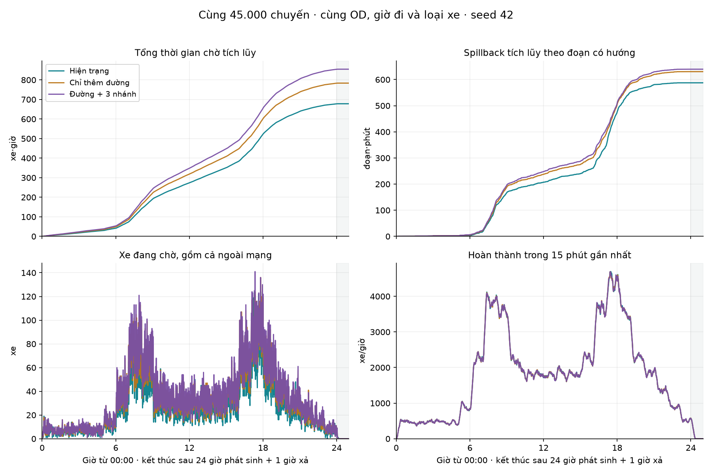
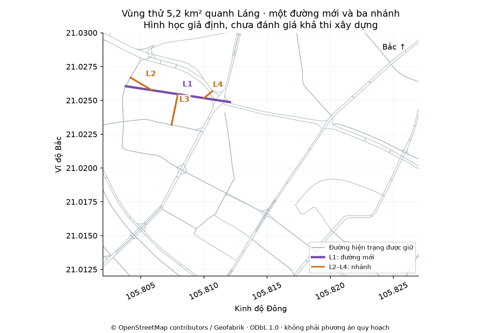

CA THỬ NGÀY 30/10/2026 · MÔ PHỎNG GIẢ ĐỊNH, CHƯA HIỆU CHỈNH THỰC ĐỊA
45.000 chuyến trong 5,2 km²
Giữ cùng nhu cầu, thêm một đường và ba nhánh: trong ca này, tổng chờ tăng 26,1%, spillback tăng 8,9%.
Mở bản thử riêng Giả lập chính
Bản thử dùng thiết kế và đầu vào bên dưới, lưu riêng trong trình duyệt để không thay thiết kế của bản chính. Bấm So sánh hai phương án để chạy lại.
Kết quả sau 24 giờ phát sinh + 1 giờ xả
Phương án đầy đủ tăng 176,7 xe·giờ, tương đương 14,1 giây chờ trên mỗi chuyến đặt; spillback tăng 52,1 đoạn·phút. Cả ba hoàn thành đủ 45.000 chuyến và không còn xe chờ cuối kỳ. Throughput trung bình trong cửa sổ 25 giờ đều là 1.800 xe/giờ; điều này không chứng minh năng lực cực đại của ba mạng bằng nhau.
Ca trung gian chỉ thêm đường có tổng chờ 783,6 xe·giờ. Ba nhánh làm tăng thêm 71,2 xe·giờ (+9,1%) và 9,3 đoạn·phút (+1,5%) so với ca chỉ thêm đường.

Đồ thị và đỉnh hàng chờ lấy mẫu mỗi 60 giây. Spillback được cộng ở từng bước 2 giây.
Vùng và thiết kế đã cố định trước khi chạy
Khung [105.802, 21.012, 105.827, 21.030], diện tích 5,21 km² quanh Láng. Bộ lọc Ẩn đường ngõ giữ các lớp motorway/trunk/primary/secondary/tertiary và đường nối tương ứng; hình học lấy từ OSM. L1 dùng nguyên tuyến mẫu có sẵn, không chọn lại sau kết quả 45.000 chuyến. Ba nhánh đặt ở 25%, 50%, 75% chiều dài L1, nối đến ba nhóm đường hiện trạng khác nhau theo khoảng cách; không tối ưu theo kết quả.

Số chuyến theo tuyến có thể chồng nhau. Tất cả các lượt chọn tuyến trên đây đã thực sự đi vào và hoàn thành trong ca này. L1 có 4 732 chuyến dùng khi chưa có ba nhánh, và 4 613 khi có đủ nhánh.
Giữ cùng nhu cầu và kiểm tra bảo toàn
Tạo một lần tập 45 000 chuyến từ hiện trạng trong khung; dùng chính xác cùng các đối tượng chuyến cho cả ba động cơ. Cùng OD, giờ đi, loại xe, seed 42, hai cao điểm sáng/chiều. Thực tế mẫu có 36 079 xe máy và 8 921 ô tô; xác suất xe máy đặt là 80%. Mã nhu cầu 9f40391f. Không có nhu cầu phát sinh thêm.
Các cửa vào/ra và điểm nội vùng được chọn chỉ từ hiện trạng, không đổi riêng cho phương án mới. Nhu cầu 45.000 chuyến áp dụng riêng cho khung này, chưa được suy ra từ số đếm giao thông thực địa. Hàng đợi ngoài mạng và xe chưa xong đều được tính. Sai số bảo toàn xe của cả ba ca bằng 0; dung tích lớn nhất ghi nhận không vượt giới hạn. Chiều dài đường hiện trạng giữ lại giữa ca đầy đủ và hiện trạng lệch 0,000000 m.
Đủ 45.000 chuyến CSV nén · Đối chiếu nhu cầu và SHA-256
Kiểm tra spillback khi số đoạn thay đổi
Đường mới chia một số đường cũ thành nhiều cạnh; ba ca có 585, 602, 622 đoạn có hướng. Vì vậy đã chạy lại nguyên đầu vào và kiểm tra thêm spillback sau khi gộp các đoạn chia về cùng cạnh có hướng của mạng đầu vào trước khi thêm đường, mỗi cạnh đầu vào chỉ đếm một lần trong một bước. Các số chờ và spillback gốc khớp chính xác lần chạy đầu; không thay hình học, nhu cầu hay tham số.
Trong ca này, gộp về cạnh đầu vào cho cùng kết quả spillback với chỉ số gốc; phần km đường·phút bị chặn tăng 4,4%. Spillback được ghi nhận trên các đường hiện trạng, không nằm trên chính tuyến và nhánh mới. Một đoạn bị chặn 10 phút đóng góp 10 đoạn·phút; chỉ số này không phải số phút một tài xế phải chờ.
Diễn giải có giới hạn
Phương án đầy đủ có thêm 12 nút tín hiệu giả định trong mạng tính toán, so với 5 khi chỉ thêm đường. Đường mới và nhánh đồng thời đổi tuyến đi, chuyển hướng, xung đột và số điểm điều khiển; ca thử chưa tách riêng đóng góp của từng cơ chế. Đường mới được sử dụng nhưng tổng chờ vẫn tăng trong chính mô hình này.
Định tuyến cố định theo chi phí chạy tự do và chờ đèn trung bình, không chuyển tuyến theo ùn tắc khi đang chạy. Đèn mới mặc định chu kỳ 90 giây; tốc độ, năng lực, PCU và điểm đi–đến là giả định. Chỉ một hạt giống, một thiết kế; không có khoảng tin cậy hay kết luận quy hoạch. Các đường thẳng vẽ thêm có thể cắt qua công trình hoặc không gian không thể xây dựng. Chưa hiệu chỉnh và kiểm định bằng giao thông thực địa.
Tái lập và nguồn
Cấu hình · Thiết kế · Quy tắc cố định trước khi chạy · Kết quả đầy đủ · Bảng CSV · Ba mạng GeoJSON · Số liệu lần chạy đầu · Đối chiếu giao diện
node scripts/run_area_45000.cjs chạy lại ba ca từ thiết kế đã đóng băng; node scripts/export_area_45000.cjs xuất mạng và nhu cầu. Mã mô hình tại commit nền 3d51193.
Phương pháp và nguồn vùng Vành đai 3 · Provenance dữ liệu. © OpenStreetMap contributors / Geofabrik, ODbL 1.0; WorldPop 2020 / University of Southampton, CC BY 4.0. Mã nguồn MIT.